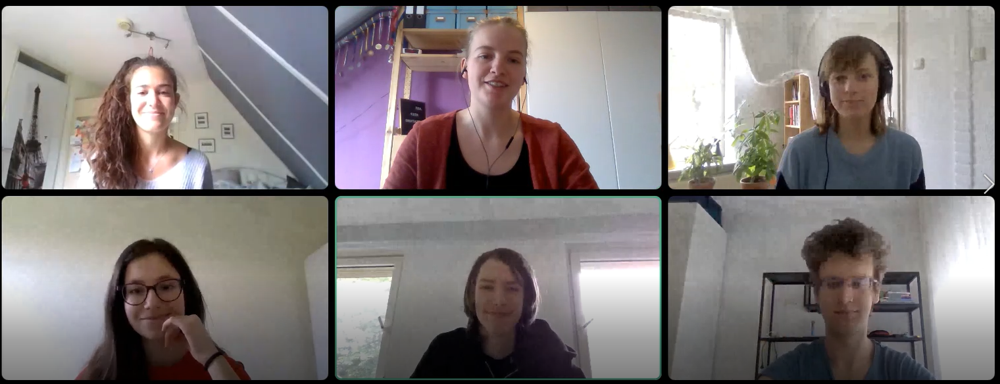

Hello and Welcome to iFish
We are first-year students at Eindhoven University of Technology. At the end of the year we had a project to create a visualization tool for eye-tracking data. After 2 months of researching, designing and programming, we have finally made a new tool for visualizing huge datasets (with eye-tracking data). It is now presented in front of you. iFish can give you insightful picture of your complicated data. For this purpose we have implemented popular visualization techniques such as spatial heat map and bubble map. Moreover you can track user's eye path with the help of scanpath. Last but not least a statistical representation of the data in the form of boxplot can be illustrated as well. Now you have to just go to upload page, upload your data and ENJOY: )
We wish you nice experience with the tool
From iFish team
Scan path
Example of scan path made with the test dataset. The stimili that has been used is Hong Kong metro map. One can notice the thicker red line, which shows from the beginning to the end one of the users' eye path. Multiple sliders and options are provided for better exploring.

Heatmap
Example of the heatmap made with the test dataset. The stimili that has been used is again Venedig metro map. The places where most of the users are looking at, are marked with red color. Sliders for changing the intensity, blur, radius and timestamps can be used to regulate the visualisation.
Bubble chart
Example of bubble chart made with the test dataset. The stimili, which has been used, is of the Antwerpen metro map. Big bubbles correspond to more users looking at that place. Hovering over the bubbles shows the number of fixations and the average duration recorded at that place.
Boxplot
Example of boxplot made with the test dataset. The stimili at which the peolple have watched, is Bordeaux metro map. The boxplot shows the average duration of all users, who has looked at the selected map.